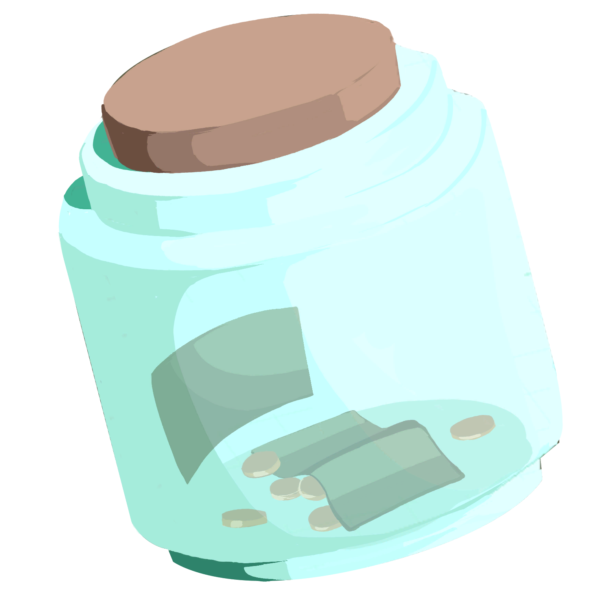
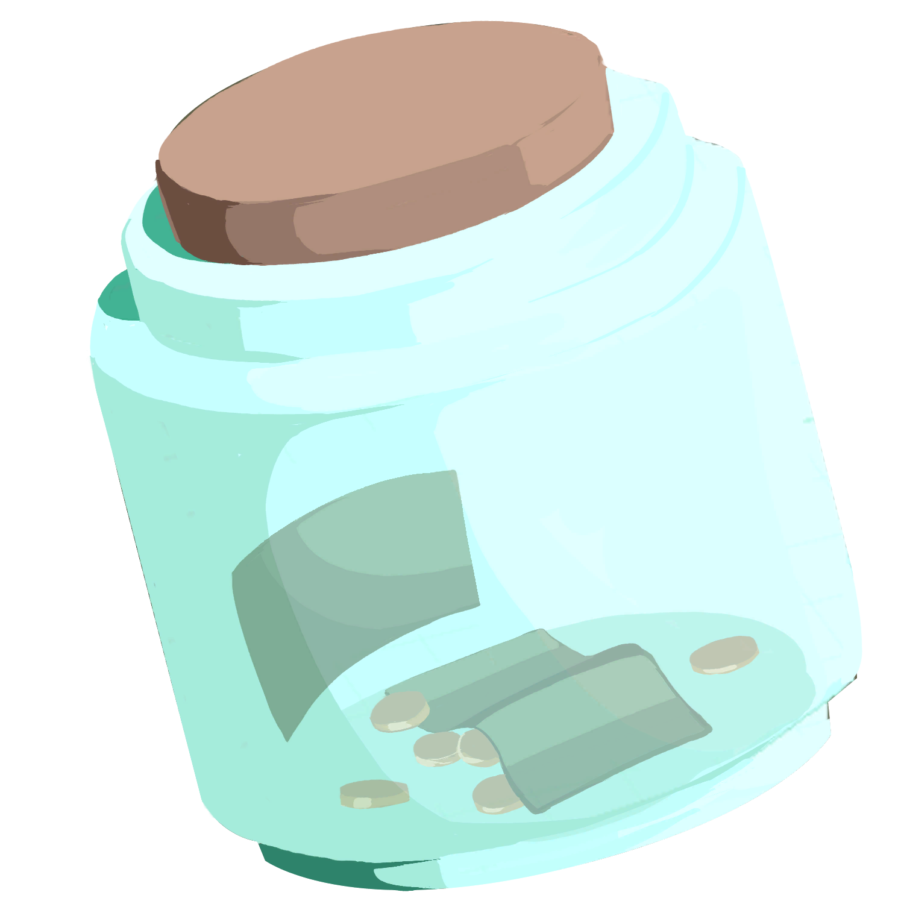

Debuging a modování
Často debuguji hry a prohledávám jejich soubory, když pracuji na projektu spojeném
s danou hrou nebo jen pro zábavu.
Udělal jsem tak už v RE8, kde jsem bral textury pro můj VR projekt,
ve hře The Were Cleaner,
protože jsem na ni vytvořil animaci a potřeboval více referencí a BSOTM, kde jsem se koukal jen pro zábavu, protože hra je celkově vlastně o hledání easter eggů.
U her mě často zajímá proces jejich vytváření a rád nacházím easter eggy + jejich nevyužité části.
Už jsem pro to využíval Unity, Fluffy Mod Manager, REFramework, noesisv439, umodel apod.
Dole jsou fotky různých věcí, které jsem našel ve filech těch her.
Zatím jsem modoval Beatsaber na Meta Quest 2 (songy, kostky a různé life impovement věci) a také jsem na headset stáhl funkční verzi Minecraftu. Modování her mě baví a plánuji v tom pokračovat.
RE8:
The Were Cleaner:
 

Bendy: